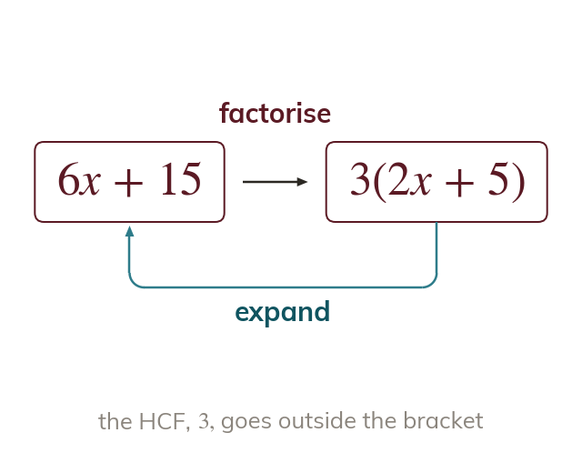

Factorising as the inverse of expanding
Factorising is the inverse of expanding. Take the HCF of every term outside the bracket. Expand back out to check.
Factorising rewrites an expression as a product, usually a number and/or letter multiplied by a bracket, such that expanding the result gives back the original expression. To factorise, find the highest common factor (HCF) of every term - both the numbers and any letters - and write it outside a bracket containing what's left when each term is divided by that HCF. Checking by expanding the result back out catches most sign or coefficient errors before they're marked wrong.